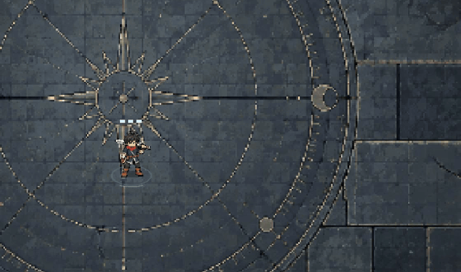
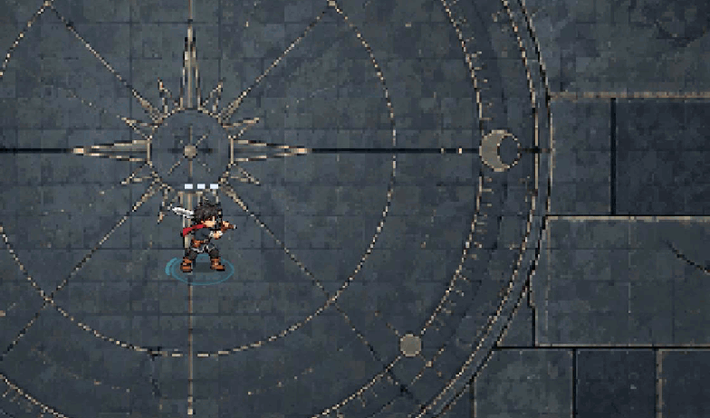
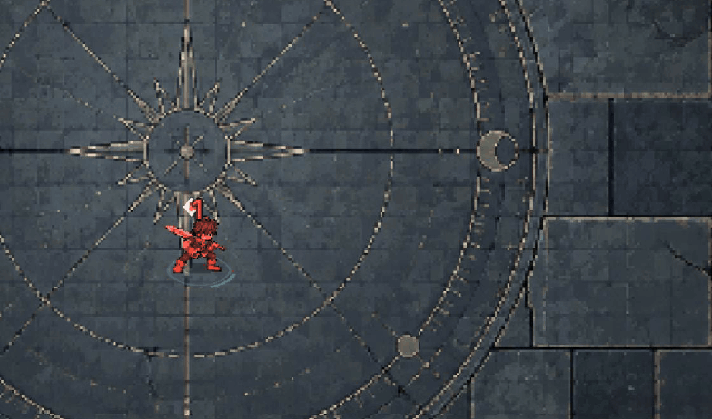
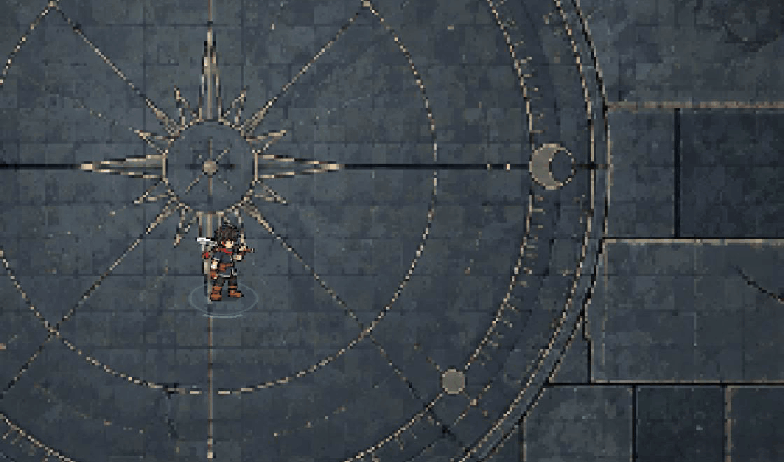

King C — actual Godot Combat Lab review
Open the game, press F7, then KING REVIEW. LOOK switches C / original. SPEED cycles real gear, base, and equipment caps. VIEW toggles close-up; HIT / STUN use actual damage and control signals with health restored. REACH displays the real basic contact shape.
Video preserves the native 1920×1080 render and game audio. The GIFs below are cropped close-ups of the same capture, not a different animation simulation. AI is paused and King is invincible in the opening contact comparison. Later sections isolate his movement and actions.
Idle and four-direction walk

Three physical cuts and white trails

Hit reaction, stun and dash

Equipment speed caps

Skills keep their current rules and effects with temporary C body-pose mappings. This preview does not finalize the skill redesign or replace King throughout the campaign.
Scope, limitations and validation · Image generation prompts